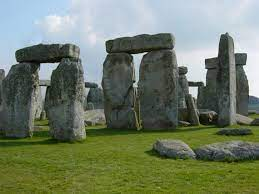

Britannia
A hatalmas, szeles Britannia földjén, az évszakok körforgásával járó időjárás mindig kihívások elé állítja a bátor harcosokat. Az északi részek hideg és zordak, míg délen enyhe és esős a klíma. A lápos területeken sűrű a köd, ami kiváló rejtekhelyül szolgál az ellenségnek, de mi is megtanultuk kihasználni az előnyeit. Ezen a misszión legfőképpen a limeszt - a Római Birodalom északi határát kell őrizned. Gyakran kell barbár támadásokat visszavernünk, melyben a hatékony őrség, a limesz, de még a helyiek egymás közti folytonos viszálya is a segítségünkre van. Ha itt fogsz szolgálni, készülj fel a zord időjárásra, akkor ajánlom, ha eleve az északibb vidékekről származol, déliként nem fog tetszeni.
